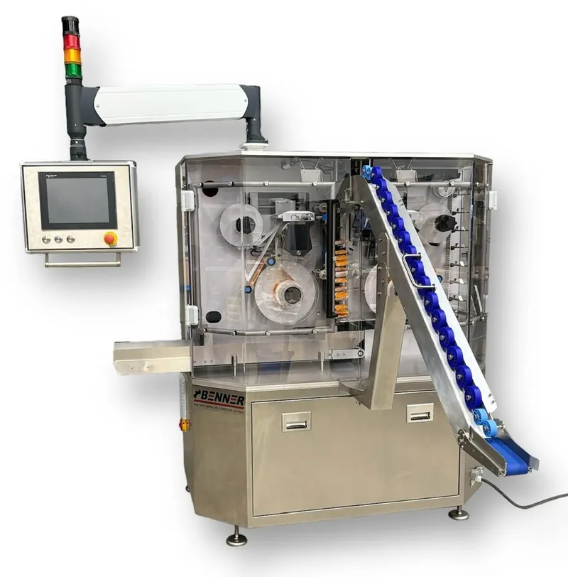

Ein festes Format
Multipackmaschinefür ein festes Format
Für die Lücke zwischen Handarbeit am Packtisch und Großserienanlage. Liegende Beutel und Flowpacks, als Modul am Ende Ihrer Linie.
- Ausgang
- bis 30 Multipacks/min
- Bündel
- 2–10 Beutel, je nach Produkthöhe
- Fläche
- rund 4 m², rollbar